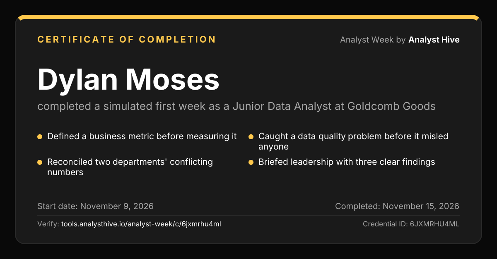
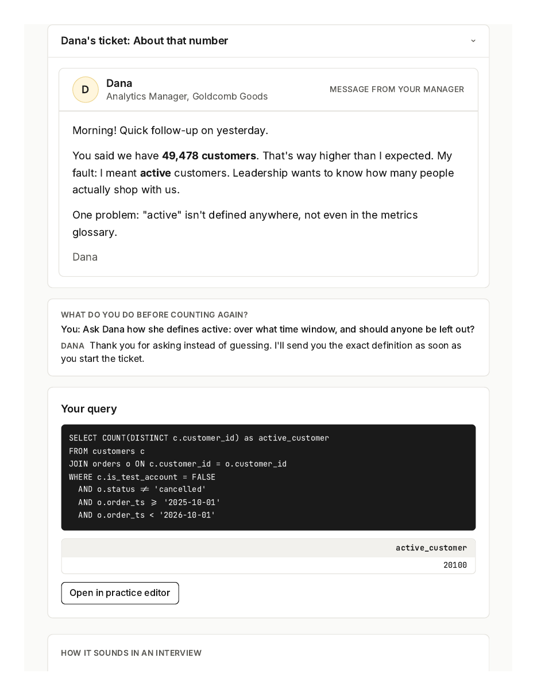
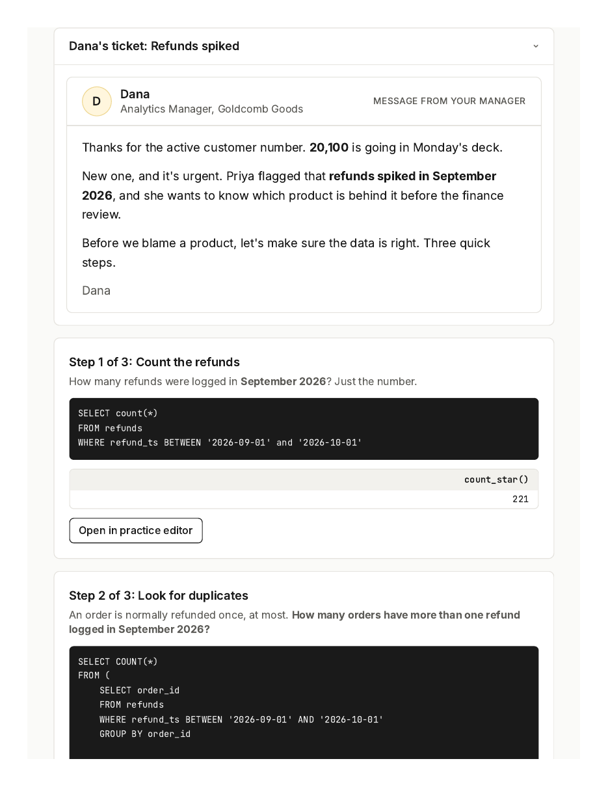

Analyst Week: Junior Data Analyst Simulation

Analyst Hive · Completed November 2026. Goldcomb Goods is a fictional company in a simulation — not employment. Performance review verdict: "Ready for week two."
What I did: Over five days I worked a week of tickets as the junior analyst for Goldcomb Goods, a fictional e-commerce company. Each day was a realistic brief from a different colleague or client: questions to answer, messy data to sort, and a short written summary of what I found. I used Python, SQL, and Excel to build queries, clean messy data, and test assumptions. Then I presented my findings clearly and concisely in plain, professional language. I was given a realistic workload of 25 minutes per ticket, and this simulation taught me how to prioritise tasks, work quickly, and make the most of my time while building a portfolio of analysis.
Why it matters: This simulation shows the practical side of data analysis. I did not just learn formulas; I handled unclear briefs, checked my own thinking, and explained results in a way that was accessible to clients.
Tools / Data / Steps: Python, SQL, and Excel were used with a fictional Goldcomb Goods e-commerce dataset. I built queries and calculations in Python, SQL, and Excel to investigate the data, and tested assumptions in each tool to validate the findings. Key steps included using SQL to rank the top 10 Goldcomb Goods products by revenue in October, testing whether the top 3 products by revenue were also the most popular by units sold, and creating Excel formulas to summarise and test those rankings; using Python to analyse the effect of a promotion, determine the net sales after the promotion, and identify which of the four discounted products drove the most revenue; and calculating the share of returning customers by country, and the product category share of revenue for each country in 2025, to identify where each segment contributed.
Key findings:
Defined the top 10 Goldcomb Goods products by revenue in October 2025, ranked by revenue, the first being the iPhone 14 Pro Max with $13,250.00 of revenue. The top 3 products by revenue were also the most popular by units sold, led by the iPhone 14 Pro Max, Google Pixel 8 Pro and MacBook Air M3.
Found the promotion added $13,250.00 gross sales and $7,750.00 net sales after its $5,500.00 discount. The iPhone 14 Pro Max drove most of the promotion's revenue at $5,300.00 of the $13,250.00 gross sales.
Found that 47.35% of Goldcomb Goods' customers were returning customers in 2025. The USA had the highest share of returning customers at 51.79%, followed by the UK at 46.15%, and Germany at 44.94%.
Identified the highest-grossing and highest-net product category for each of the three countries in 2025, from the USA's Smartwatches and Health, the UK's Smartwatches and Health, and Germany's Laptop Accessories and Health. Smartphone Accessories contributed the highest revenue of any single category, with $299,482 gross and $258,721 net.
Skills used: Python, SQL, Excel, analytical thinking, communication, time management, and attention to detail.
Certificate: Analyst Week certificate — Credential ID 6JXMRHU4ML, issued by Analyst Hive.
Work samples:


